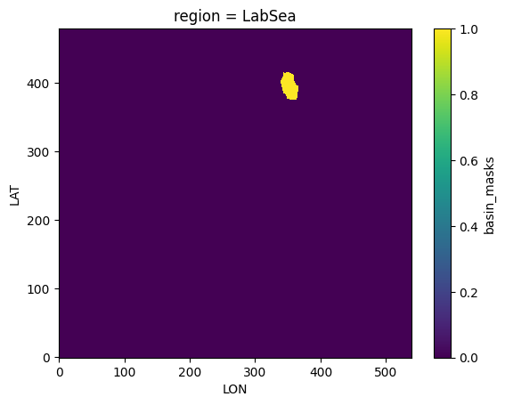
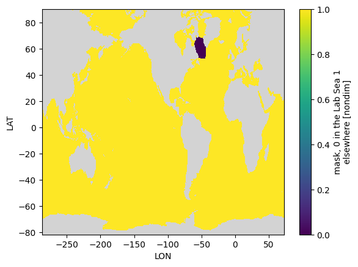

Create a 2D mask with zero in the Lab Sea and one elsewhere#
%load_ext autoreload
%autoreload 2
import numpy as np
import xarray as xr
import matplotlib.pyplot as plt
import datetime
import subprocess, os, warnings
warnings.filterwarnings("ignore")
%matplotlib inline
today = datetime.date.today().strftime("%y%m%d")
print(today)
260306
grd = xr.open_dataset('../mesh/tx2_3v3_grid.nc')
grd
<xarray.Dataset>
Dimensions: (ny: 480, nx: 540, nxp: 541, nyp: 481)
Dimensions without coordinates: ny, nx, nxp, nyp
Data variables: (12/20)
tlon (ny, nx) float64 ...
tlat (ny, nx) float64 ...
ulon (ny, nxp) float64 ...
ulat (ny, nxp) float64 ...
vlon (nyp, nx) float64 ...
vlat (nyp, nx) float64 ...
... ...
tarea (ny, nx) float64 ...
tmask (ny, nx) float64 ...
angle (ny, nx) float64 ...
depth (ny, nx) float64 ...
ar (ny, nx) float64 ...
egs (ny, nx) float64 ...
Attributes:
Description: CESM MOM6 2/3 degree grid
Author: Frank, Fred, Gustavo (gmarques@ucar.edu)
Created: 2026-03-05T14:49:28.971877
type: Glogal 2/3 degree grid filemasks = xr.open_dataset('/glade/work/gmarques/cesm/tx2_3/basin_masks/basin_masks_tx2_3v3_260306.nc')
masks = masks.rename({'yh':'LAT', 'xh':'LON'})
masks
<xarray.Dataset>
Dimensions: (region: 18, LAT: 480, LON: 540)
Coordinates:
* region (region) <U17 'Global' 'PersianGulf' ... 'SouthernOcean60S'
Dimensions without coordinates: LAT, LON
Data variables:
basin_masks (region, LAT, LON) float64 ...masks.basin_masks.sel(region='LabSea').plot()
<matplotlib.collections.QuadMesh at 0x14c7420362d0>

#create dataset
# extract coordinates from masks dataset
lat = masks["LAT"]
lon = masks["LON"]
fill = -1e34
# create empty Cr field
Cr = xr.DataArray(
np.full((lat.size, lon.size), fill, dtype="float32"),
dims=("LAT", "LON"),
coords={"LAT": lat, "LON": lon},
name="Cr"
)
# add attributes
Cr.attrs = {
"_FillValue": fill,
"long_name": "mask, 0 in the Lab Sea 1 elsewhere",
"units": "nondim",
"missing_value": fill
}
# ensure coordinate attributes exist
lat.attrs.update({"units": "degrees_north", "axis": "Y"})
lon.attrs.update({"units": "degrees_east", "axis": "X"})
# create dataset
ds = xr.Dataset(
{"Cr": Cr},
coords={"LAT": lat, "LON": lon}
)
print(ds)
<xarray.Dataset>
Dimensions: (LAT: 480, LON: 540)
Coordinates:
* LAT (LAT) int64 0 1 2 3 4 5 6 7 8 ... 472 473 474 475 476 477 478 479
* LON (LON) int64 0 1 2 3 4 5 6 7 8 ... 532 533 534 535 536 537 538 539
Data variables:
Cr (LAT, LON) float32 -1e+34 -1e+34 -1e+34 ... -1e+34 -1e+34 -1e+34
lats_out = np.zeros(len(ds.LAT))
for j in range(len(ds.LAT)):
if grd.tlat[j,0] <= 0.:
lats_out[j] = np.min(grd.tlat[j,0:])
else:
lats_out[j] = np.max(grd.tlat[j,0:])
ds = ds.assign_coords({
"LAT": (("LAT"), lats_out),
"LON": (("LON"), grd.tlon[0,:].data)
})
ds['Cr'][:] = 1.0
ds['Cr'][:] = ds['Cr'][:].where(masks.basin_masks.sel(region='LabSea') != 1, 0)
cmap = plt.cm.viridis.copy() # or any other colormap, e.g., 'RdBu_r'
cmap.set_bad(color='lightgray')
fig, ax = plt.subplots()
(ds['Cr']).where(grd.tmask.rename({'nx' : 'LON','ny' : 'LAT'})==1).plot(ax=ax, cmap=cmap, vmax=1)
<matplotlib.collections.QuadMesh at 0x14c73e85f850>

# Global attrs
ds.attrs['long_name'] = 'MLE Cr mask (0 in the Lab Sea and 1 elsewhere)'
ds.attrs['units'] = 'nondim'
ds.attrs['author'] = 'Gustavo Marques (gmarques@ucar.edu)'
ds.attrs['date'] = datetime.now().isoformat()
ds.attrs['url'] = 'https://github.com/NCAR/tx2_3/mle_frontal_length_scale/'
ds['LON'].encoding['_FillValue']=None
ds['LAT'].encoding['_FillValue']=None
ds['LAT'].attrs['units'] = 'degrees_north'
ds['LAT'].attrs['axis'] = 'Y'
ds['LON'].attrs['units'] = 'degrees_east'
ds['LON'].attrs['axis'] = 'X'
fname = 'mle_cr_labsea_mask_tx2_3v3_{}.nc'.format(today)
# Save file
ds.to_netcdf(fname, engine="netcdf4", format="NETCDF3_64BIT_DATA")
# Close the dataset
ds.close()